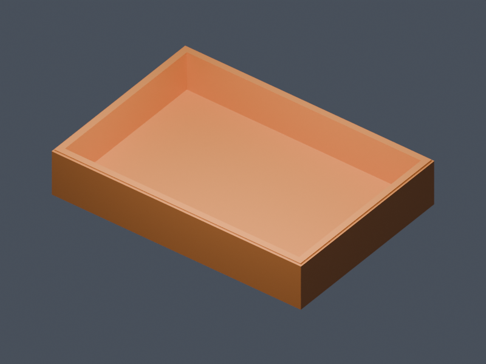

BLENDER / INTRODUCTION TO 3D MODELING
From your first cube
to something useful.
Learn the tools by building a desktop organizer tray. Practice each action here, then try it in real Blender.

YOUR FIRST PROJECT
A place for the little things.
A 100 × 70 × 18 mm tray, with 3 mm walls and floor. Start with a cube. Shape a cavity. Finish the rim. Export a mesh you can inspect in your slicer.
Three tutorials · 47 guided steps
Object Mode → Edit Mode → export
Allow 75–105 minutes, plus real Blender practice.
Desktop and mouse recommended. Blender 5.2.2 LTS reference; default Blender keymap. Blender’s drag controls support orbit, pan, and zoom with a mouse, pen, or touch.
Keep Blender open alongside the course.
Download Start to use our millimeter scene. Repeat each exercise in Blender, save often, and use Save As before experimenting. Later checkpoints let you catch up without repeating everything.
Before printing & what this first release covers
The generated mesh is closed manifold and its STL dimensions have been verified. A physical print has not yet been tested. In Bambu Studio, verify dimensions, place the flat bottom down, keep the cavity upward, slice, and inspect floor and wall layers. Follow the lab’s printer procedures.
This first release teaches selection, navigation, native transform confirmation and cancellation, scrolling crowded headers, live visual and numeric transforms, Shift precision, shortcut practice, face selection, inset, extrusion, a prepared rim bevel, face orientation, and saving/export. Loop cuts, dissolve, face filling, mesh repair exercises, and a less-guided assessment are planned extensions. Each simulation supports only its current task; it is not a general Blender editor.
Save/export dialogs are simulations. Real checkpoint downloads are provided separately. Browser progress is local to this browser and is not a Moodle grade.
Save your real Blender project before leaving. Tutorial completion is not authorization to use shop equipment independently.